Skipper
The leader of the group who coordinates tasks, guides decision-making, and ensures the team stays on track.
The Egg Drop Experiment is a hands-on physics experiment that allows students to experiment
with the concepts of force, motion, gravity, and energy. The goal of the Egg Drop Experiment is to create a
device that protects a raw egg from breaking when it is dropped from a predetermined height.
When a falling object reaches the ground, gravity acts upon it and causes it to accelerate
and gain speed. The kinetic energy that results from falling must be absorbed or otherwise
prevented from damaging the egg upon impact. By developing a device for increasing time of
impact and distributing the force of impact over an area, the force acting on the egg at
impact can be reduced.
This experiment illustrates how concepts of Newton's Three Laws of Motion, momentum, and
impulse apply to physical examples as related to the real world. The project requires
students to use their critical thinking, creativity, and problem solving skills to
develop their project plans through engineering design.
The leader of the group who coordinates tasks, guides decision-making, and ensures the team stays on track.
The documenter of the group who records procedures, observations, and results clearly and accurately
The main researcher of the group who gathers relevant information and physics concepts to support the design.
The main problem solver of the group who analyzes challenges and develops effective solutions during the project.
- Longer stopping time → smaller force on the egg.
- Force spreading reduces stress on any single point.
- Energy is absorbed by the structure, not the egg.
- Lower acceleration = lower force
- Triangular structures are mechanically stable
- Stable objects fall predictably and absorb force evenly.
Toothpicks and glue are commonly used in egg drop experiments because they are lightweight, inexpensive, and structurally effective materials that allow students to build strong but low-mass frameworks. Toothpicks provide a good strength-to-weight ratio, making them capable of supporting the egg without adding excessive weight that would increase impact force during a fall. When combined with glue, they can form stable geometric structures such as trusses, cages, and pyramids that distribute force evenly across the structure instead of concentrating it on a single point. This makes them ideal for demonstrating basic engineering principles such as load distribution, compression, tension, and structural stability.
Cushioning and shock-absorbing designs help protect fragile objects by reducing the amount of force transferred during impact. When an object falls, damage occurs when it stops suddenly and the force of collision is transferred directly to it. Cushioning materials and flexible structures increase the stopping time of the object, which lowers the impact force and prevents sudden deceleration. These designs absorb and disperse kinetic energy through compression, bending, and deformation, allowing the energy to be spread across a wider area instead of being focused on the fragile object. As a result, the object is protected from cracking or breaking because the force is reduced, redirected, and absorbed before it reaches the most vulnerable parts.
The design idea focuses on creating a lightweight protective cage made of toothpicks arranged in triangular and pyramid shapes for maximum strength. The egg is placed at the center and suspended or cushioned by the structure so it does not directly touch the ground upon impact. This design allows the force of the fall to spread across the frame, reducing the impact force on the egg and increasing its chance of survival.
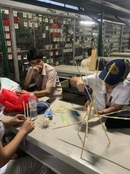
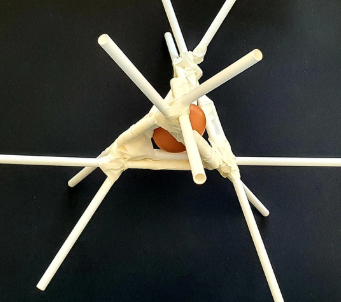
The design sketches illustrate the proposed egg drop structure and how materials are arranged to protect the egg. They show how forces from impact are distributed and absorbed to reduce damage. These sketches guide construction and help identify possible improvements before testing.
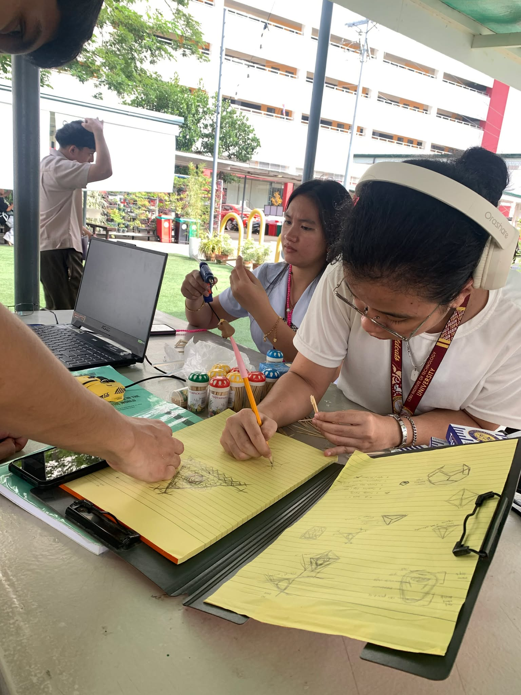
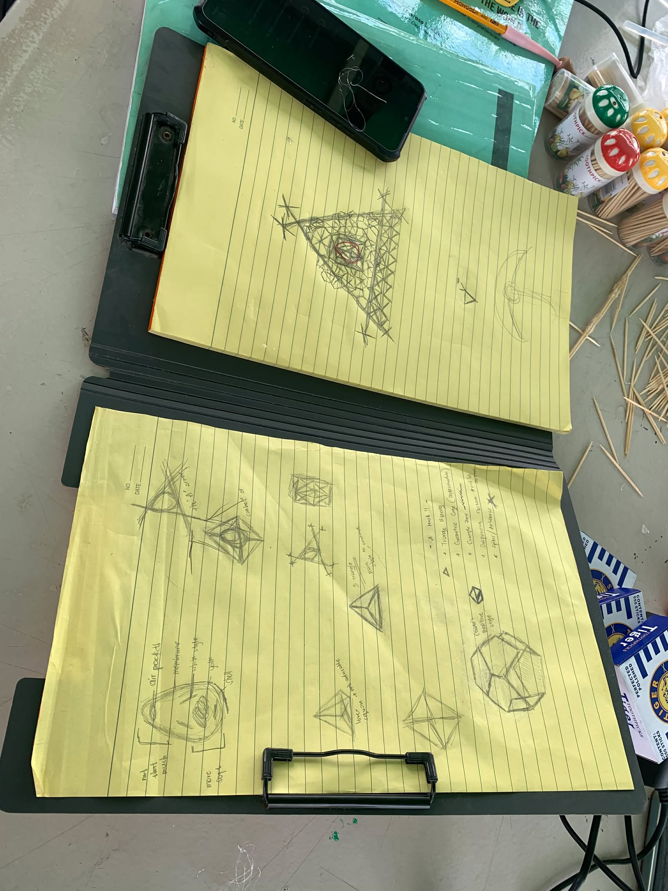
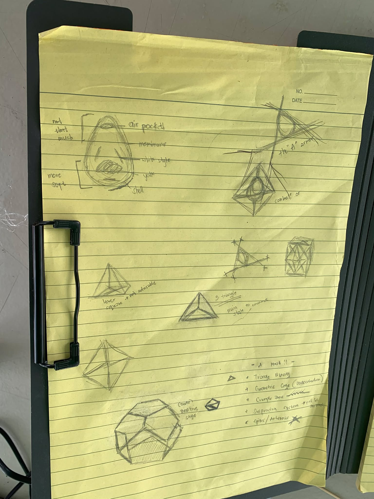
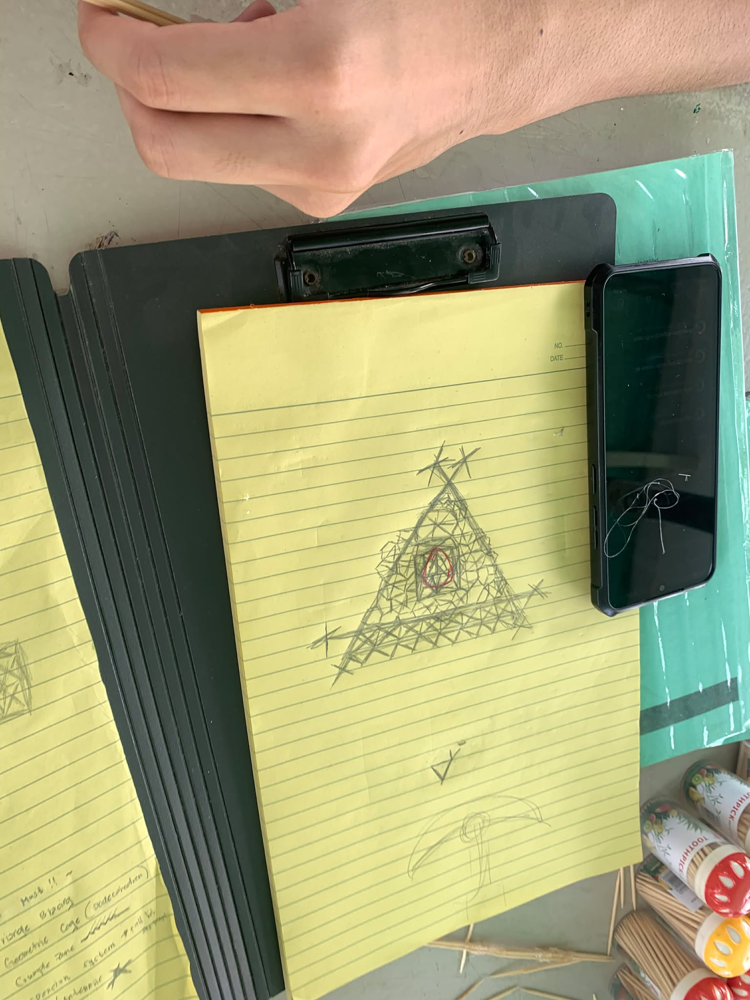
1. Build a central egg holder by forming a small cage with toothpicks and glue, securing the egg firmly in the center.
2. Attach long toothpick arms radiating outward from the center, evenly spaced, to act as shock absorbers.
3. Reinforce joints with glue blobs at intersections to increase strength and flexibility.
4. Add angled support legs below the egg so the structure lands on the arms first, not the egg.
5. Let all glue dry completely before testing to ensure structural stability.
The physics egg drop experiment assesses several fundamental concepts, including force, impact and energy absorption. The use of toothpicks and hot glue create difficulties due to the brittle nature of the toothpicks and eggshell, leading to a need for even distribution of force while reducing direct impact. A carefully thought-out design will help ensure the egg does not break upon impact with the ground.
Controlling both the way that glue attaches objects together and how the overall structure responds to impacts can also be challenging. Using too much glue will add weight to the overall structure while using too little will make the frame weak, but making some structural modifications, such as making use of triangular shapes, will aid in stability and shock absorption. Finding the right balance between rigidity and flexibility is important for developing a strong, well-designed structure that is able to absorb the energy of an impact while remaining intact; thus, providing something that exemplifies the application of the laws of physics in solving a problem.
In evaluating the stability and safety of the egg drop design at 3rd floor RTL building, the frame of the structure demonstrated structural stability while remaining intact and absorbing the impact of falling. The frame did remain intact and absorbed the impact of the fall. However, the egg broke due to the egg not being secured tightly within the frame regardless of the strength of the overall structure.
The findings of the pre-test indicated that the placement of the egg internally with regard to the structural strength on the outside of the structure was equally as important. The loosely placed egg moved and bounced within the structure when the impact of the fall occurred, causing the egg to hit the supports of the structure and be cracking. Therefore, improvements were recommended to provide some type of internal support or cushioning to keep the egg secured in its current position.
The final phase was very risky because we only had one design and no chance for trial runs. Many people doubted that the structure would survive the drop, which added pressure during the experiment. Despite this, the egg remained intact, proving that the design effectively absorbed and distributed the impact force. The successful result increased our confidence in the design and demonstrated the importance of applying physics principles rather than relying on assumptions alone.
This design centers the egg within a triangular frame, allowing impact forces to be distributed through the extended straws rather than directly onto the egg. The protruding supports act as shock absorbers by increasing the time of impact and reducing the force transferred to the egg. Overall, the structure reflects an understanding of force distribution and energy absorption, though improving symmetry and joint strength could further enhance its effectiveness during a drop.
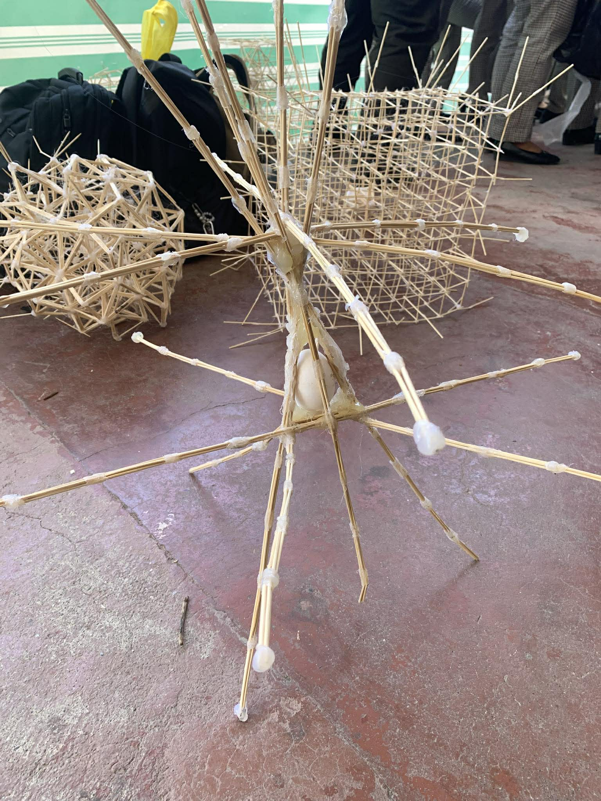
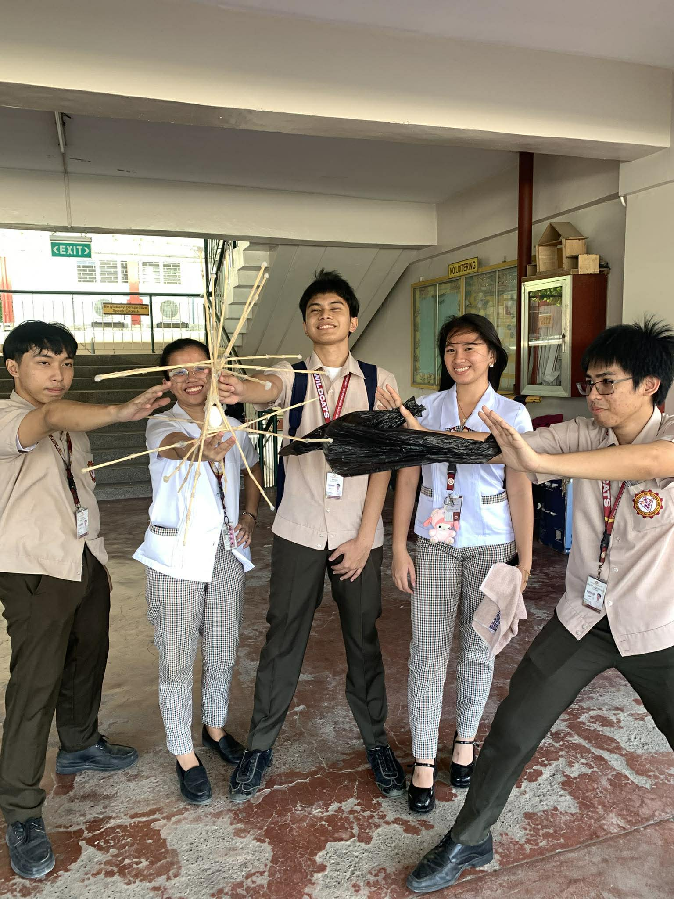
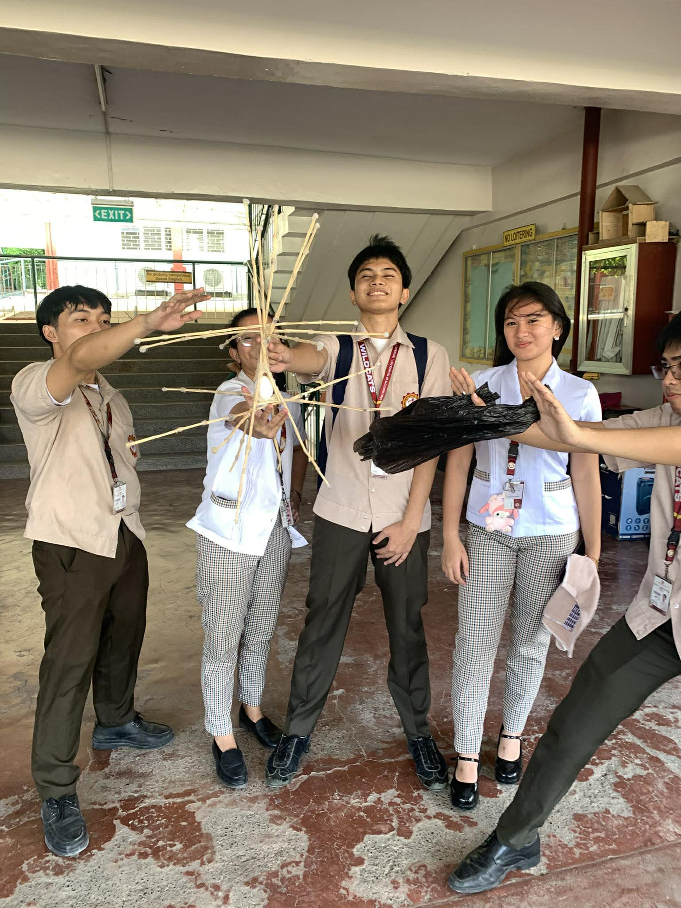
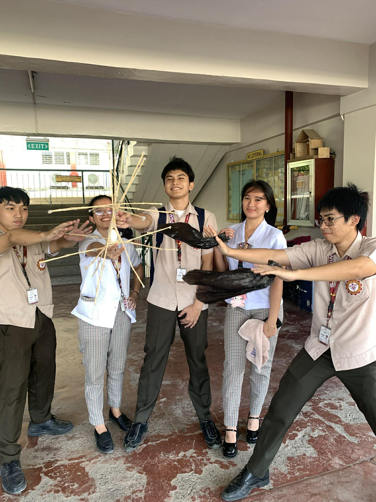
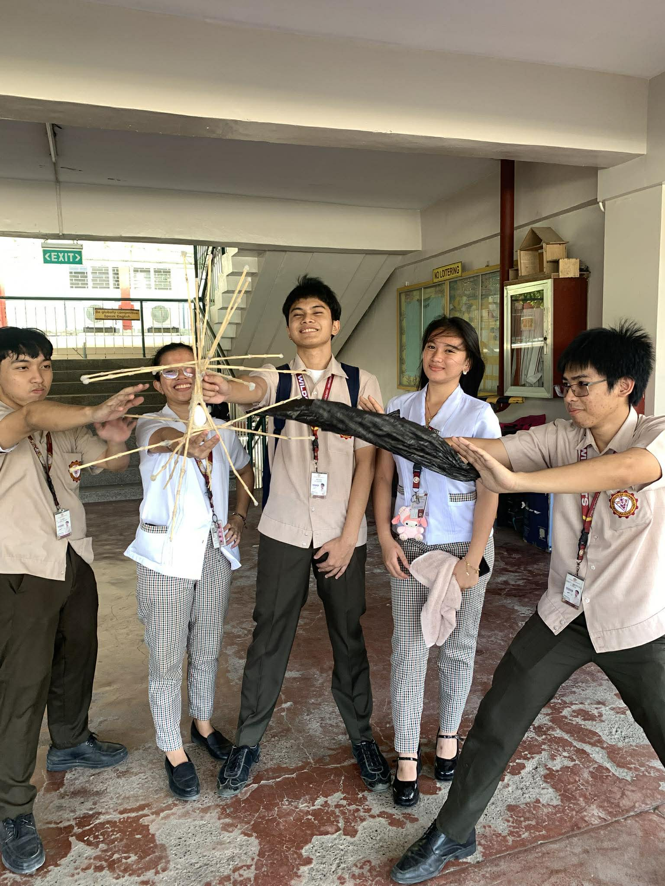